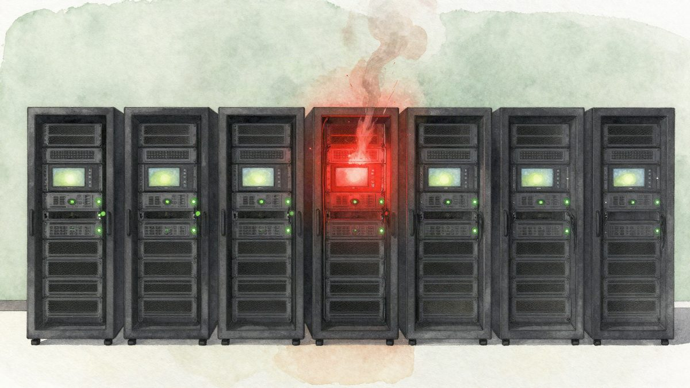

Knight Capital je za 45 minuta izgubio oko 460 milijuna dolara zbog koda koji devet godina nitko nije pokrenuo

Knight Capital je 1. kolovoza 2012. u 45 minuta izgubio oko 460 milijuna dolara. Na jednom od osam servera nije bila instalirana nova verzija software-a, pa se pokrenuo stari kod koji se godinama nije koristio. Tvrtka nije imala procedure za incidente, a SEC joj je naložio kaznu od 12 milijuna dolara.
Knight Capital Group, jedan od najvećih market makera na američkom tržištu dionica, izgubio je 1. kolovoza 2012. u 45 minuta oko 460 milijuna dolara, otprilike 10 milijuna u minuti. Uzrok je bio stari kod koji nitko nije pokretao godinama, flag koji je dobio novo značenje i jedan od osam servera na kojem nije bila instalirana nova verzija software-a.
Knight je osnovan 1995. i izvršavao je oko 10% svih trgovina američkim dionicama. Već sljedeći dan tražio je novac da preživi do kraja tjedna. Dana 6. kolovoza ponuda od 400 milijuna dolara privukla je nove investitore, uz uvjete koje bi uprava u mirnijim vremenima odbila.
Mrtav kod i preuređeni flag
Knight je promet malih ulagača primao preko brokera poput TD Ameritradea, E*Tradea i Scottradea. Naloge je usmjeravao interni router SMARS, koji velike naloge dijeli na manje i šalje ih na burze dok se cijeli nalog ne izvrši.
U SMARS-u je godinama stajala funkcija Power Peg, koju Knight od 2003. više nije koristio, ali je nitko nije obrisao. Zaustavljao ju je brojač izvršenog obujma. Kad je 2005. brojač premješten u raniji dio koda, Power Peg više nije bio testiran. Američka agencija SEC kasnije je u svom nalogu zabilježila da nakon tog premještanja nitko nije provjerio radi li funkcija ispravno.
Za novi NYSE-ov Retail Liquidity Program, koji je počinjao 1. kolovoza 2012., Knight je napisao novi kod. Umjesto novog polja u poruci, programeri su iskoristili flag kojim se nekad uključivao Power Peg. Takvo ponovno korištenje radi samo ako se stara vrijednost istodobno povuče na svim čvorovima.
Osmi server
Raspodjela novog koda počela je 27. srpnja i radila se ručno, po nekoliko servera. Prema nalogu SEC-a, jedan tehničar nije kopirao novu verziju na jedan od osam SMARS servera. Drugog tehničara koji bi to provjerio nije bilo, a nije postojala ni pisana procedura koja bi to tražila.
Oko 8:01 interni sustav počeo je slati automatske e-mailove s porukom "Power Peg disabled". Do otvaranja tržišta u 9:30 stiglo ih je 97. Nisu bili zamišljeni kao alarmi pa ih nitko nije pročitao.
45 minuta
Kad se tržište otvorilo, sedam servera obradilo je naloge s flagom kako je zamišljeno. Osmi je pokrenuo Power Peg, koji je slao podnaloge, ne bi li vidio izvršenje, i slao ih ponovno. Za 212 malih naloga SMARS je poslao milijune podnaloga, što je dalo više od 4 milijuna izvršenja u 154 vrijednosnice, ukupno oko 397 milijuna dionica. Cijene nekih dionica odmakle su od otvaranja za 30% i više.
Knight nije imao postupak za zaustavljanje SMARS-a ni pravila za reagiranje na incidente. Inženjeri su problem rješavali uživo.
Posljedice
Izvor: Habr vijesti